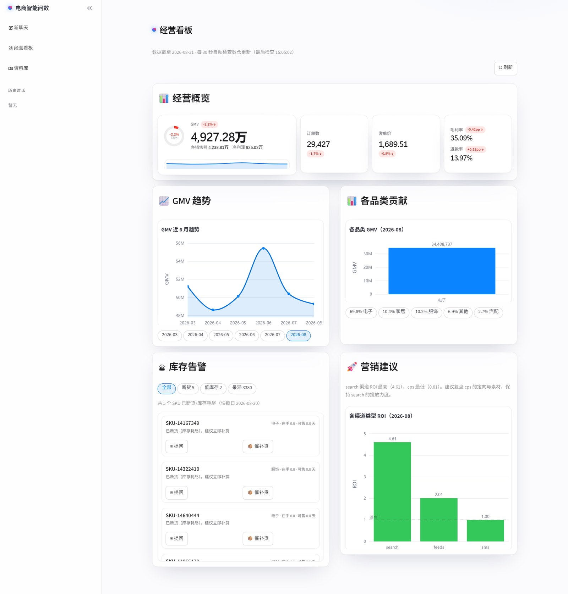
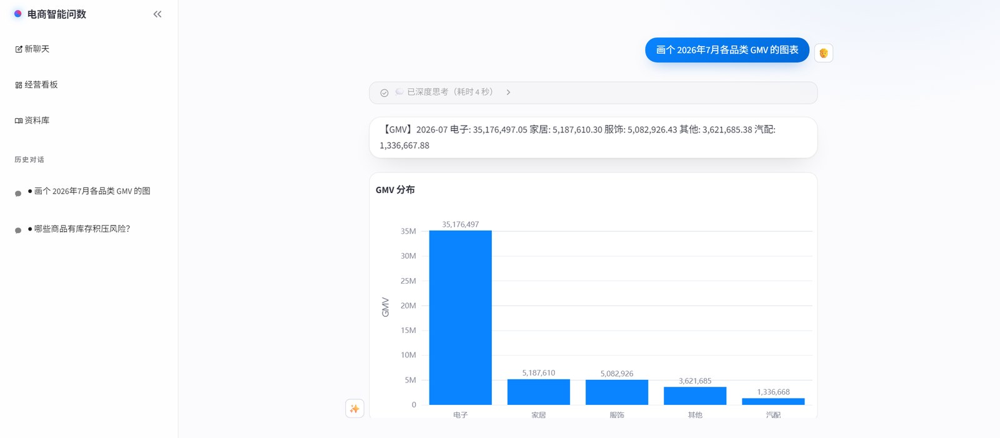

指标口径歧义
「卖得最好」是销量件数还是净销售额？扣不扣退款？线上退货率约 19.3%，不扣退款会系统性高估近两成。
语义层净销售额、净利润、复购率、ROI 等口径固化为 YAML，LLM 只选指标与维度。
DSAI · Text-to-SQL Agent
自然语言 → 语义层 → 确定性 SQL → 口径可解释的洞察与图表。 答案里带着口径、命中的表和可溯源的 SQL，而不是一个不知道从哪来的数字。
公开基准上执行准确率已经到 84.9%，但企业真实数仓里普遍掉到 10%~31%。 这四类问题各自对应本项目的一个模块。
「卖得最好」是销量件数还是净销售额？扣不扣退款？线上退货率约 19.3%，不扣退款会系统性高估近两成。
语义层净销售额、净利润、复购率、ROI 等口径固化为 YAML，LLM 只选指标与维度。
数百张表，全量 DDL 注入 4.2 万 Token（超预算 2.6 倍），还会干扰模型选表。
混合检索问题改写 + 向量/关键词 RRF 融合，Top-3 表与场景卡动态注入。
0 行比报错更危险——用户看到的是一张空表，Agent 会自信地说「没有数据」。
双轨纠错报错走纠错轨（结构化回灌 Error Log），空结果走反思轨（日期边界/值域/粒度/时效）。
业务要的是「怎么办」，让 LLM 对着结果即兴发挥既不可控也不可复现。
诊断工具链库存断货/呆滞、营销 ROI 漏斗等经营规则以代码固化，输出 data / insights / chart。
LLM 的职责被限定在「把自然语言映射为受约束的语义查询」——不写 SQL，口径由确定性代码保障。
四条设计原则 语义先行（LLM 不写 SQL）· 检索先行（先定位表再生成）· 确定性优先（口径、JOIN、诊断规则、图表样式一律用代码固化）· 可解释可回溯（每次回答附口径说明、命中表与编译后的 SQL）
无需知道表名和字段名。问「上个月哪个商品卖得最好」，回答带口径说明——是按净销售额（已扣退款）排的。
库存告警（断货/低库存/呆滞分桶 + DOI×环比象限图）、经营概览（7 项指标 + 环比 + 近 6 月趋势）、营销建议（渠道 ROI 对比）。图表支持 ▶ 播放动态回放。
在经营看板里直接提问，结果自动配图：标量指标出趋势折线，分组结果出分布柱状图，诊断工具出象限散点图。
「SKU 剩余可售 4.2 天、环比 +38%、建议 48 小时内补货」——附依据数字与 DOI 象限散点图，诊断规则是唯一事实源。
每次回答附口径说明、命中的表与编译后的 SQL，可逐步复核 Agent 的每一次决策。
检索、生成、执行各阶段实时推送到思考面板，推理流式揭示，跑完自动收起。
天气、汇率、最新资讯这类问题由 LLM 自主决定调用联网搜索，带来源摘要回答——不硬塞进数据链路。
问候、道谢零延迟回复；普通闲聊不检索、不动数仓。

